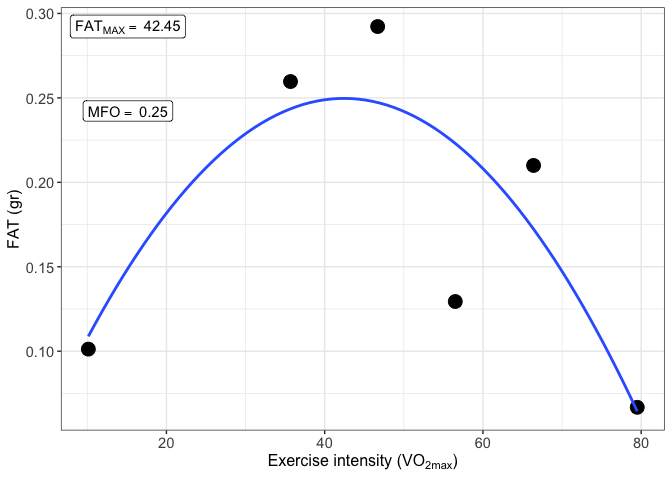
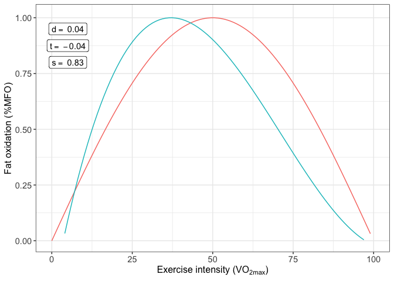

Overview
The MFO package have been designed to calculate the Maximal Fat Oxidation (MFO), the exercise intensity that elicits MFO (Fatmax) and the SIN model to represent the fat oxidation kinetics. Three variables can be obtained from the SIN model: dilatation (d), symmetry (s) and traslation (t).Additionally, the package allows to calculate MFO and Fatmax of multiple subjects.
Resources
- Application of MFO and Fatmax (European Journal of Sport Science)
- MFO kinetics basis (Medicine & Science in Sport & Exercise)
install.packages("MFO")Example
This is a basic example which shows you how to use the MFO package:
First, we have to read the data in xlsx format by using the function read_MFO_databases. Two databases and four variables are necessary to use the package: - Basal metabolism database (participant_db_basal). - MFO test database (participant_db_MFO). - Variable: oxygen uptake (VO2), carbon dioxide output (VCO2), heart rate (HR) and the respiratory exchange ratio (RER). An optional database is one with the results of a graded exercise test of which the VO2max of the subject is going to be extracted (participant_db_graded).
# Path to the MFO package sample data
path <- system.file("extdata", "sample_data.xlsx", package = "MFO")
# Read databases
sample_data <- read_MFO_databases(from = "files",
path = paste(path),
db_basal_name = "M.BASAL",
db_MFO_name = "MFO",
db_graded_name = "V02máx.",
col_name_VO2 = "V'O2",
col_name_VCO2 = "V'CO2",
col_name_RER = "RER",
col_name_HR = "HR",
remove_rows = NULL)Then, we can used the function MFO
result_MFO <- MFO(step_time = 20,
db_MFO = sample_data$participant_db_MFO,
db_basal = sample_data$participant_db_basal,
db_graded = sample_data$participant_db_graded,
cv_var = "RER",
author = "Frayn",
VO2max = NULL)and the MFO can be plotted
print(result_MFO$MFO_plot)
MFO kinetics are calculated using a database returned from MFO function called MFO_db.
result_MFO_kinetics <- MFO_kinetics(result_MFO$MFO_db)And again the function returns a plot with the results calculated
print(result_MFO_kinetics$MFO_kinetics_plot)